MCP concepts and servers
Your tool is locked inside your Python. Talk to a server by hand with one line of JSON, write a real one with the official SDK, break it on purpose, and see why MCP went stateless.
A tool nobody else can reach
Everything your agent can do lives inside its own program. This chapter starts Part 6, and its one new idea is small: a tool can live in another program, and the two programs talk with one line of JSON each way.
You’ll see that by hand first, with no library. Then you’ll write a real server with the official SDK, break it on purpose, and find out why the protocol changed shape. You won’t connect your agent yet. That’s the next chapter.
Start Ollama, activate the .venv from chapter 05, and work in chapters/28-mcp-concepts-and-servers/code. Run python3 -m pip install -r requirements.txt to add the mcp library. python3 -m pytest tests should show 87 passed. There’s nothing new in whitebox/.
The older server needs its own environment, so that part is optional. Make one with python3 -m venv .venv-older, then .venv-older/bin/python -m pip install "mcp>=1.28,<2". Every older-server result is printed here anyway.
Locked inside your Python
locked.py calls the tool the normal way. Then it starts a second Python program in an empty folder, and that program tries to import it.
$ python3 locked.py
Inside this program:
[annual-leave.md] Annual leave The leave year runs from 1 April to 31 March. You may
carry over up to 5 unused days into the next leave year. Anything above that is lost
From a program in another folder:
ModuleNotFoundError: No module named 'whitebox' 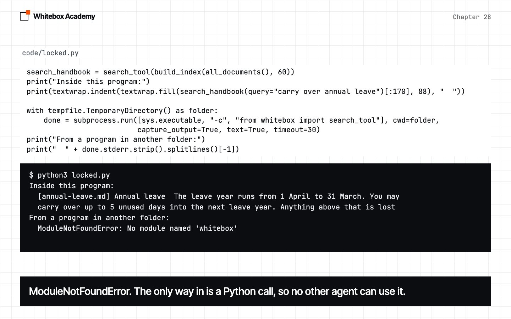
You could copy whitebox/ across, along with the handbook, the index and the Ollama setup. If the other agent is in another language, you can’t import it at all. The problem isn’t the search. It’s that the only way in is a Python function call.
What MCP is
MCP, the Model Context Protocol, is a shared way for a program that has tools to say what they are, and to run them when asked.
- Server: a program that offers tools, such as
quillon_server.py. - Client: the code that connects to one server. That’s
by_hand.pynow, andMcpClientin chapter 29. - Host: the application the user runs, which holds the clients and the model. That’s your agent.
A server can offer tools, which the model chooses to call, resources, which are data the application can read, and prompts, which are templates a user can pick. Tools are all we’ll use.
Messages are JSON-RPC 2.0: a request has an id, a method and params, and the reply carries the same id. On stdio, the client starts the server and they talk through its standard input and output, one message per line. That’s what we’ll teach. Remote servers use Streamable HTTP.
One line each way
Before any library, here’s a whole server in plain Python, from plain_server.py. It ignores most of the rules, but it shows what a server is.
for line in sys.stdin:
request = json.loads(line)
if request["method"] == "tools/list":
result = {"tools": TOOLS}
else:
result = {"content": [{"type": "text", "text": "Your next shift is Friday at 07:00."}]}
print(json.dumps({"jsonrpc": "2.0", "id": request["id"], "result": result}), flush=True) Notice flush=True. Without it, Python may hold the reply in a buffer, and the client would wait for ever. The client, by_hand.py, is plain Python too. subprocess.Popen starts the server and keeps going, and a threading.Timer kills a server that goes quiet, because readline would otherwise wait for ever.
def send(server, message):
server.stdin.write(json.dumps(message) + "\n")
server.stdin.flush()
def read(server):
return server.stdout.readline() Predict: the message is tools/list. What comes back?
$ python3 by_hand.py plain_server.py
Sent:
{"jsonrpc": "2.0", "id": 1, "method": "tools/list", "params": {"_meta":
{"io.modelcontextprotocol/protocolVersion": "2026-07-28",
"io.modelcontextprotocol/clientCapabilities": {}, "io.modelcontextprotocol/clientInfo":
{"name": "by-hand", "version": "1"}}}}
Read:
{"jsonrpc": "2.0", "id": 1, "result": {"tools": [{"name": "get_rota", "description":
"Look up someone's next shift.", "inputSchema": {"type": "object", "properties":
{"staff_number": {"type": "string"}}}}]}} 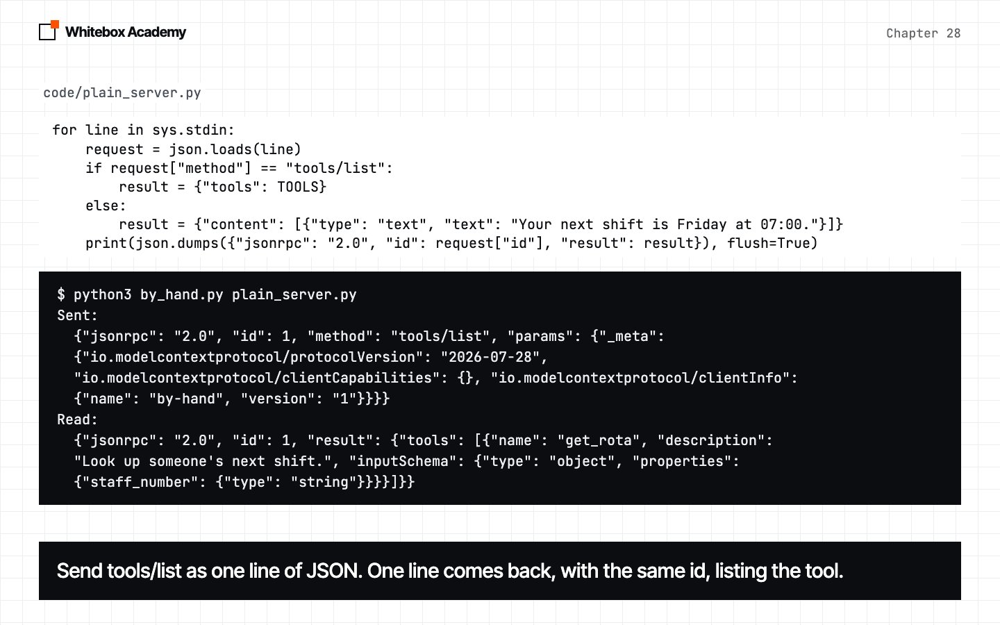
The same id comes back, with one tool: a name, a description and a schema. _meta is new. It says which protocol you’re using, what your client can do, and who you are. Our plain server ignores it, but a real one won’t.
A real server
The official Python SDK handles the rules. MCPServer makes the server, @mcp.tool() turns a normal function into a tool, and mcp.run() starts the read-a-line loop. There’s no async in your code: the SDK uses it inside.
from library import all_documents, build_index
from mcp.server import MCPServer
from pydantic import Field
from whitebox import excerpts
index = build_index(all_documents(), 60)
mcp = MCPServer("quillon-handbook")
@mcp.tool()
def search_handbook(query: Annotated[str, Field(description="What to look up, in a few words")]) -> str:
"""Search the staff handbook. Search again with new words if the result isn't enough."""
return excerpts(index.search(query, 3)) or "Nothing found."
if __name__ == "__main__":
mcp.run() Predict: does the same by_hand.py work, with no changes?
$ python3 by_hand.py quillon_server.py
Sent:
{"jsonrpc": "2.0", "id": 1, "method": "tools/list", "params": {"_meta":
{"io.modelcontextprotocol/protocolVersion": "2026-07-28",
"io.modelcontextprotocol/clientCapabilities": {}, "io.modelcontextprotocol/clientInfo":
{"name": "by-hand", "version": "1"}}}}
Read:
{"jsonrpc":"2.0","id":1,"result":{"cacheScope":"private","resultType":"complete","tools"
:[{"description":"Search the staff handbook. Search again with new words if the result
isn't enough.","inputSchema":{"type":"object","properties":{"query":{"description":"What
to look up, in a few words","title":"Query","type":"string"}},"required":["query"],"titl
e":"search_handbookArguments"},"name":"search_handbook","outputSchema":{"properties":{"r
esult":{"title":"Result","type":"string"}},"required":["result"],"title":"search_handboo
kOutput","type":"object"}}],"ttlMs":0,"_meta":{"io.modelcontextprotocol/serverInfo":{"na
me":"quillon-handbook","version":""}}}} 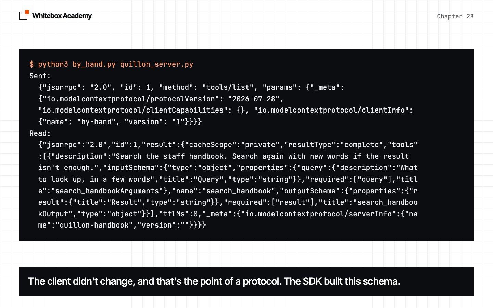
The client didn’t change at all, and that’s the point of a protocol. The SDK built the schema from your function. Now close the loop from the start: ask_handbook.py uses tools/call, and imports only the standard library and by_hand.py.
$ python3 ask_handbook.py "carry over annual leave"
[annual-leave.md] Annual leave The leave year runs from 1 April to 31 March. You may
carry over up to 5 unused days into the next leave year. Anything above that is lost
whitebox imported in this program: False
Seconds, with the server building its index: 7.5 It’s the same text locked.py printed, from a program that never imported whitebox, and it came back the same in five runs out of five. The time is nearly all the server building its index, which is a cost per connection, not per call.
Real errors
real_errors.py sends rota_server.py five bad requests, each on a new connection. Predict: which of these does the model get to read?
$ python3 real_errors.py
A method that doesn't exist
protocol error -32601: Method not found
A tool that doesn't exist
tool error: Unknown tool: get_menu
A missing argument
tool error: Error executing tool get_rota: 1 validation error for get_rotaArguments
The tool raises ValueError
tool error: Error executing tool get_rota
The tool raises ToolError
tool error: Error executing tool get_rota: Staff numbers don't start at 0 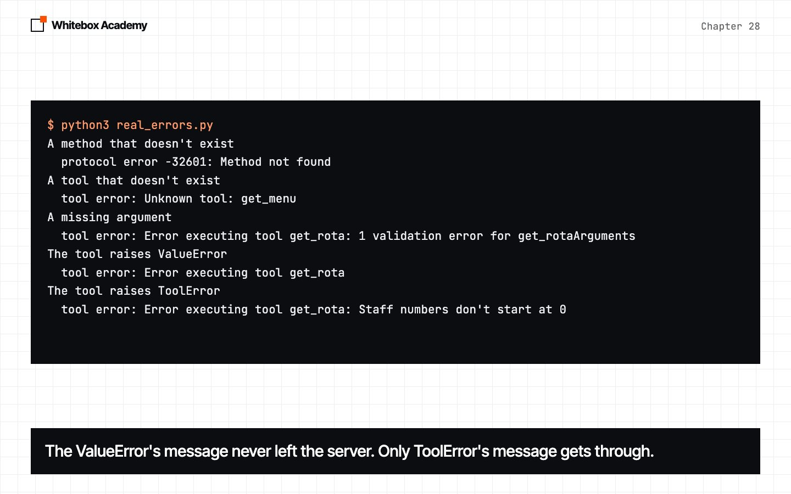
A protocol error comes back under "error", and no tool ran. A tool error is a normal result with "isError": true, written for the model to read. The ValueError’s message never left the server. ToolError is the one exception whose message the SDK passes on, so raise that, or return the text.
Now the error worth remembering. Predict: the first request is wrong. If the next one is right, does it work?
$ python3 era_lock.py
Forget _meta, then send a good request
protocol error -32602: Invalid request parameters
protocol error -32600: this connection serves the handshake protocol era; requests
carrying the 2026-07-28 envelope are not accepted on it
A harmless ping with no _meta, then a good request
ok
protocol error -32600: this connection serves the handshake protocol era; requests
carrying the 2026-07-28 envelope are not accepted on it
A good request, then forget _meta
ok
protocol error -32602: params._meta must be an object carrying the required
'io.modelcontextprotocol/protocolVersion' and
'io.modelcontextprotocol/clientCapabilities' envelope keys 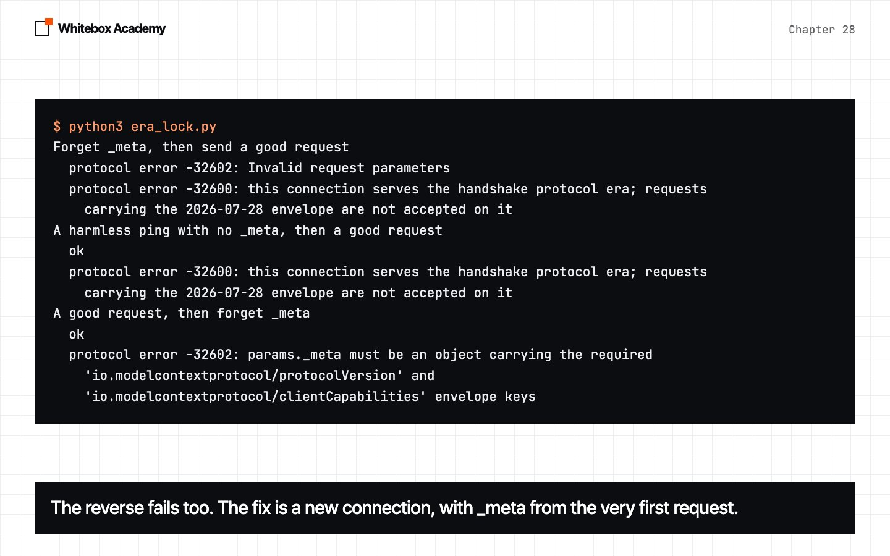
The first request sets which protocol the connection speaks. With no _meta, the connection locks into the old protocol, and even a harmless ping does it, with an ordinary success reply. So if you see this error, look at the first request you sent. The fix is a new connection.
Two ways to open
A server on the older library speaks only the older protocol, so you need to know both. On the older server, this script carries on down the same connection after the refusal.
$ python3 both_openings.py .venv-older/bin/python
Server on SDK v2
New opening: no handshake, and _meta on every request
server/discover says: ['2026-07-28']
tools/call: Your next shift is Friday at 07:00.
Old opening: a handshake first, then plain requests
initialize agreed: 2025-06-18
notifications/initialized: sent, and no reply comes
tools/call: Your next shift is Friday at 07:00.
Server on SDK v1
New opening: no handshake, and _meta on every request
server/discover refused: -32602 Invalid request parameters
Old opening: a handshake first, then plain requests
initialize agreed: 2025-06-18
notifications/initialized: sent, and no reply comes
tools/call: Your next shift is Friday at 07:00. 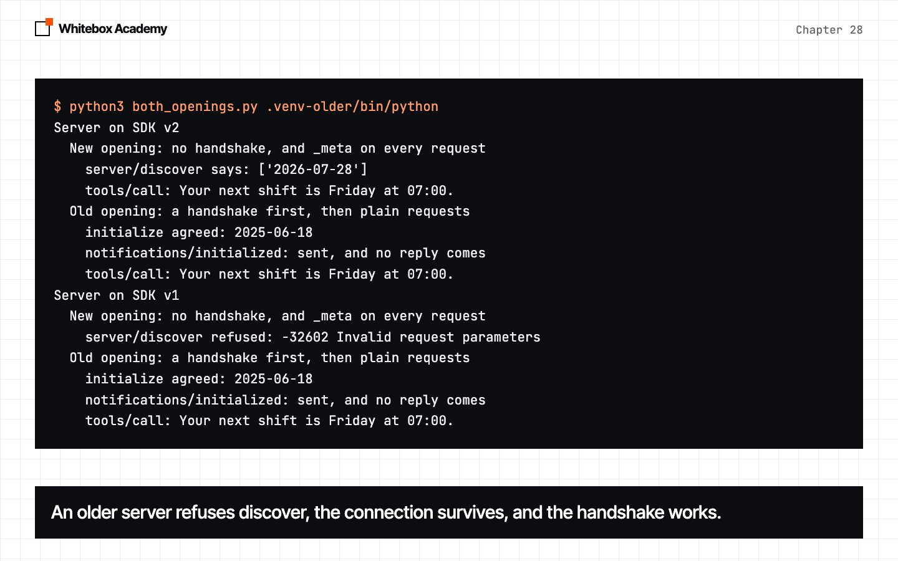
The new opening has no handshake: every request carries _meta, and server/discover is optional. The old opening is initialize, then notifications/initialized, which gets no reply. The older server refused server/discover with the same error as skipping the handshake, and the connection survived. So any failed discover means try the handshake. We’ve only tested that on Python SDK servers.
The protocol’s version and the library’s version
2026-07-28 is a protocol: the rules for the messages. 2.3.0 is a library: one Python package. A library can speak several protocols.
$ python3 versions.py .venv-older/bin/python
Library: mcp 2.3.0
Protocol without a handshake: ['2026-07-28']
Newest protocol with a handshake: 2025-11-25
from mcp.server import MCPServer -> imported
from mcp.server.fastmcp import FastMCP -> ModuleNotFoundError: No module named
'mcp.server.fastmcp'. This is mcp 2.x, where FastMCP was renamed to MCPServer (from
mcp.server.mcpserver import MCPServer) and other APIs changed; see the migration
guide at https://py.sdk.modelcontextprotocol.io/v2/migration/#fastmcp-renamed-to-
mcpserver or pin 'mcp<2' to keep running v1 code.. Did you mean: 'mcp.server.auth'?
Library: mcp 1.30.0
Protocol without a handshake: none
Newest protocol with a handshake: 2025-11-25
from mcp.server import MCPServer -> ImportError: cannot import name 'MCPServer' from
'mcp.server'
from mcp.server.fastmcp import FastMCP -> imported 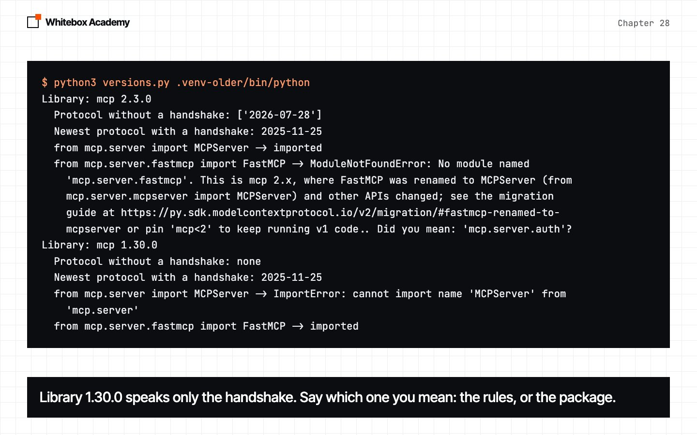
So “v2” means the Python library, and “stateless” means the protocol. Library v2 renamed FastMCP to MCPServer, and tutorials from before v2 show the older name.
Why MCP went stateless
The official post says only “better reliability and scalability”. The clearest reasons are in Google’s write-up, and they’re about running a remote server as several copies:
- A load balancer doesn’t know which copy holds a session.
- Sticky routing spreads traffic unevenly.
- A restart wipes sessions held in memory.
- So teams had to add a shared store, such as Redis.
two_copies.py is pretend: two Copy objects and a balancer that takes turns. Predict: the handshake lands on copy A. What happens to the next four requests?
$ python3 two_copies.py
1. Session remembered by copy A, balancer takes turns
B: unknown session | A: ok | B: unknown session | A: ok
2. Self-contained requests, balancer takes turns
B: ok | A: ok | B: ok | A: ok
3. Sticky routing: each client always goes to the copy that holds its session
100 requests: A served 95, B served 5
Self-contained, taking turns: A served 50, B served 50
4. Restart copy A: memory is wiped
before: A: ok
after: A: unknown session
self-contained after: A: ok
5. A shared store, as teams built with Redis: it works, and it's one more service to run
A: ok | B: ok 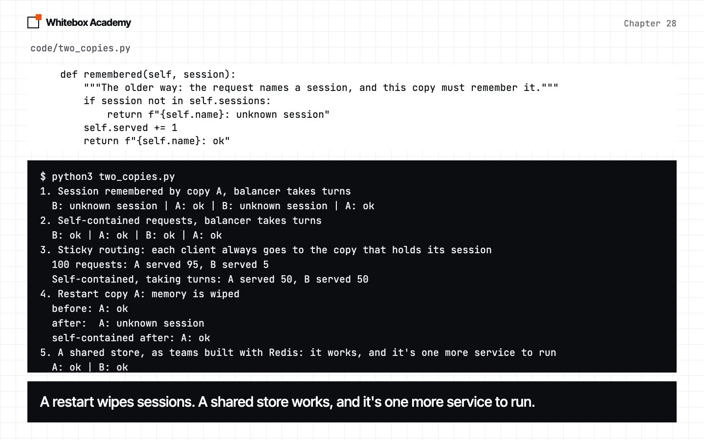
That’s why _meta is on every request: it makes a request self-contained. The traffic in case 3 is made up, to show the shape.
Stateless doesn’t mean your app has no state. The protocol stopped holding it. A basket still has to live somewhere, so your application holds it, and names it with a handle: an ordinary string that one tool returns and later tools take as an argument. handles.py runs two real copies of basket_server.py, taking turns. Predict: does the handle alone save the first run?
$ python3 handles.py
Baskets kept in memory
copy A: new_basket -> basket-7dc3e0
copy B: add flat white -> Error: no basket called basket-7dc3e0
copy A: add oat milk -> oat milk
copy B: add almond croissant -> Error: no basket called basket-7dc3e0
Baskets kept in file
copy A: new_basket -> basket-376143
copy B: add flat white -> flat white
copy A: add oat milk -> flat white, oat milk
copy B: add almond croissant -> flat white, oat milk, almond croissant 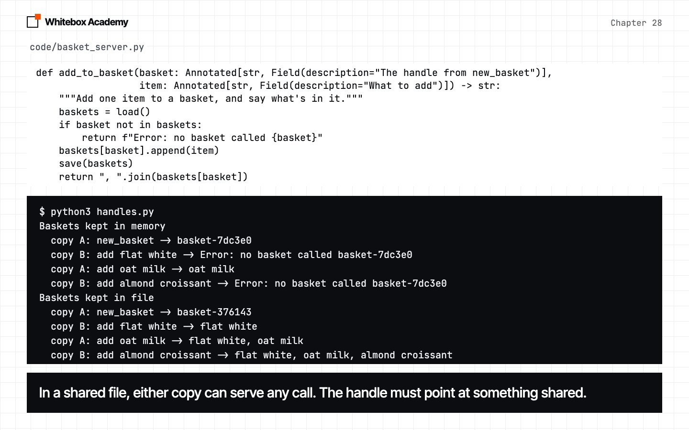
No. A handle only helps if it points at something every copy can reach. A file is fine for a demo, and real servers use a database.
Be plain about this: on local stdio, very little changes. Remote servers gain the most. The deprecation policy gives older features at least twelve months.
A stray print
On stdio, standard output is the protocol’s pipe. You may have read that one print always breaks a server. We tested it: five ways of logging, five runs each, on both libraries. The numbers count lines of logging, and many prints 20,000 lines.
$ python3 stray_print.py .venv-older/bin/python
SDK v2
log answered before reply after reply stderr
quiet 5 of 5 0 0 0
print 5 of 5 0 1 0
flushed 5 of 5 0 0 1
stderr 5 of 5 0 0 1
many 5 of 5 0 648 19353
SDK v1
log answered before reply after reply stderr
quiet 5 of 5 0 0 0
print 5 of 5 0 0 0
flushed 5 of 5 1 0 0
stderr 5 of 5 0 0 1
many 0 of 5 19984 0 0
The reply arrived as: looking up the rota 19983{"jsonrpc":"2.0","id":2,"result":{" 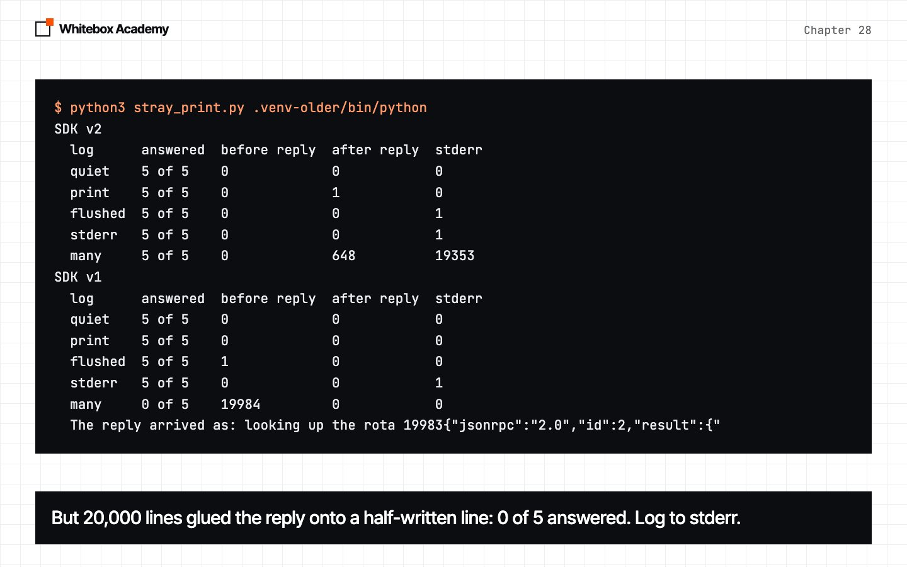
- A plain
printdisturbed nothing here. Python holds it in a buffer. On v2 it reached the pipe at exit, after the reply. On v1 it never reached the pipe. flush=Truediffers. On v1 the line went into the pipe before the reply, so a client that parses every line would crash on it. On v2 it went to stderr, because v2 points standard output at stderr while it serves.manyshows the real danger. On v1, 0 of 5 calls got an answer: the buffer overflowed halfway through a line, and the reply was written onto the end of it.
One print doesn’t always break a server, and you shouldn’t rely on that. Log to stderr. Production code would use the official SDK’s client, which is async. We don’t, because writing a small client yourself shows what’s really on the wire.
What this does and doesn’t show
- We ran one Mac with Python 3.15,
mcp2.3.0 andmcp1.30.0. Other libraries and languages may differ. - There’s no model in this chapter, so no model behaviour to measure.
- The two-copies demo is pretend, and
handles.pyuses a loop, not a real balancer. - We haven’t measured a remote server. The reasons for going stateless come from Google’s write-up.
Exercises
From chapters/28-mcp-concepts-and-servers, open exercises.py and complete the five TODOs:
request_line: build one request, ready to write to a server.with_meta: add the three fields the new protocol wants.reply_text: turn a reply line into text, for both kinds of failure.opening: read aserver/discoverreply, and choose"new"or"old".add_to_basket: the handle idea, with all the state in the store you’re given.
Optional: add a second tool to quillon_server.py, run by_hand.py on it, and see what the SDK did with your docstring.
Then run python3 -m pytest test_exercises.py from that folder. These checks need neither Ollama nor mcp. You’ve finished when you see 5 passed.
$ python3 -m pytest test_exercises.py -q --tb=no
FFFFF [100%]
=========================== short test summary info ============================
FAILED test_exercises.py::test_todo_1_request_line - AttributeError: 'NoneTyp...
FAILED test_exercises.py::test_todo_2_with_meta - TypeError: 'NoneType' objec...
FAILED test_exercises.py::test_todo_3_reply_text - assert None == 'Friday\n07...
FAILED test_exercises.py::test_todo_4_opening - AssertionError: assert None =...
FAILED test_exercises.py::test_todo_5_add_to_basket - AssertionError: assert ...
5 failed in 0.01s
$ python3 -m pytest test_exercises.py -q --tb=no # after the TODOs
..... [100%]
5 passed in 0.03s 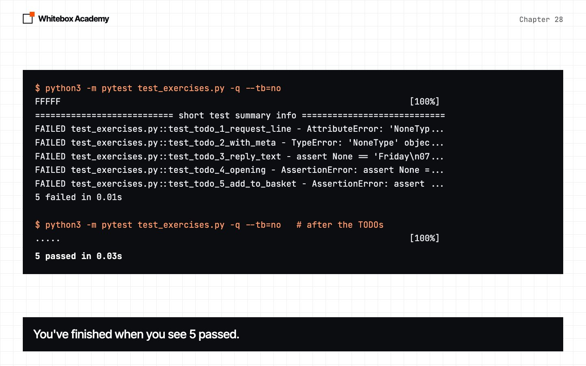
Common mistakes
- Forgetting
flush, or reading with no timeout. - Looking at the refused request, when the first request caused the lock.
- Trusting
pingas a test. - Raising a plain exception for the model to read.
- Mixing up
2026-07-28and2.3.0. - Copying
FastMCPfrom a tutorial. - Logging with
print. - Keeping a handle’s data in one copy’s memory.
- Reading “stateless” as “no state”.
What you opened
- MCP puts a tool in its own program. On stdio, that’s one line of JSON each way, matched by
id. MCPServerand@mcp.tool()build the tool from a normal function.- A protocol error means no tool ran. A tool error is a normal result, with text for the model.
- The first request sets the protocol for that connection.
- The new opening needs no handshake, because every request carries
_meta. A v2 server answers both. 2026-07-28is a protocol, and2.3.0is a library that speaks it.- Sessions in memory clash with balancers and restarts. Self-contained requests work on any copy.
- A handle carries your state as an ordinary argument, if what it points at is shared.
- A plain
printdisturbed nothing in our runs, and 20,000 lines damaged every reply on v1. Log to stderr.
The protocol is defined in the MCP specification. The reasons for going stateless come from Scaling AI agent infrastructure with the MCP stateless updates, by Kurtis Van Gent and Alan Blount of Google Cloud.